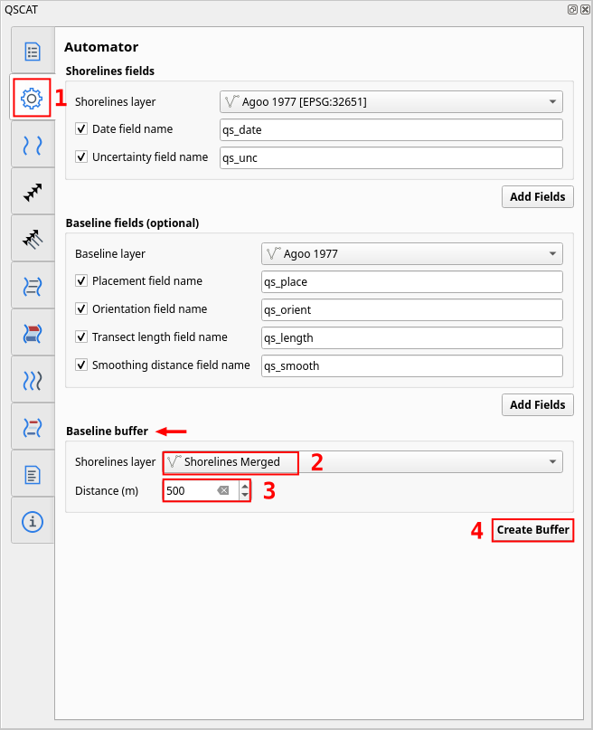
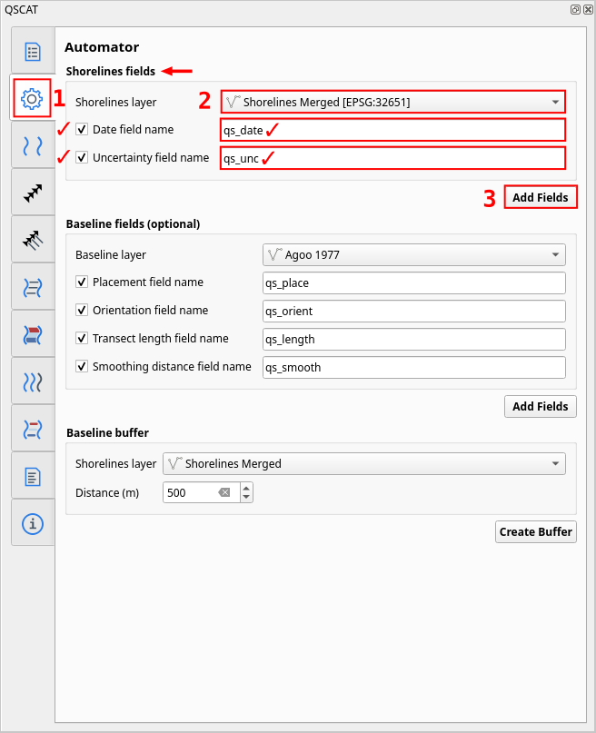

This section provides a step-by-step guide on how to run a shoreline change analysis using QSCAT with sample data from Agoo, La Union shorelines. The sample data includes shoreline vectors from 1977, 1988, 2010, and 2022. The process includes generating the baseline vectors, merging the shoreline vectors, and running the shoreline change analysis.
According to the Required Inputs section, the QSCAT requires the two following layers:
The tracing of shoreline vectors are out of scope in this guide. However, the shoreline vectors are already provided in the sample data. The shoreline vectors are saved as separate shapefile layers for each year. The shoreline vectors are saved as follows:
Agoo 1977 - shoreline vectors from 1977
Agoo 1988 - shoreline vectors from 1988
Agoo 2010 - shoreline vectors from 2010
Agoo 2022 - shoreline vectors from 2022
You can download the sample data from the following link: <insert link>
One of the required inputs for the QSCAT is the baseline vectors. Baseline vectors can be created using the following different strategies:
Creating a buffer of merged shorelines layer.
Creating a buffer of a single shoreline layer.
Manually drawing lines using Add Line Feature.
In this guide, we will choose the first strategy, which is creating a buffer of the merged shorelines layer. Then, we will choose the part of the buffer that best represents the baseline.
Merging the shoreline step is optional. We only apply this if our digitized shorelines are saved as separate shapefile layers. However, in this guide, the Agoo, La Union shorelines are shared as separate shapefile layers. Thus, we will demonstrate here on how to merge these layers.
However, regardless on what strategy you choose for generating the baseline vectors, the QSCAT requires the shoreline layers to be merged into a single layer. Also, if you choose the first strategy, you should first merge the shoreline layers so that we can create a buffer of all shorelines.
Search Mergevectorlayers in the search bar. Then double left-click on Mergevectorlayers to open the tool.
Fig. 45 Searching merge vector layers in Processing Toolbox#
In Input layers, click … then select the all shoreline layers to be merged. In this example, select Agoo 1977, Agoo 1988, Agoo 2010, and Agoo 2022. After you are done selecting, click OK.
In Merged, it is recommended to permanently save the merged layers. Thus, click …, and Save to file. Choose a folder (recommended in the same folder of your QGIS project), pick a file name such as ShorelinesMerged and choose SHPfiles(*.shp) as the file type, and click Save. Click Run to start the merge process, then you can Close.
Here, we can start using the QSCAT plugin. The QSCAT plugin has a feature that automates the creation of the Baseline buffer.
Open QSCAT if not yet opened. The QSCAT plugin can be open by clicking the icon at the top toolbar area near the Python Console icon.
In the QSCAT interface, navigate to Automator Tab. Then, in the Baseline Buffer section, select the merged shoreline layer from Input shorelines layer. Next, enter 400 in the Distance (m), click Buffer. The buffer will be created and displayed in the map canvas. The buffer will be saved as a temporary layer.

Fig. 52 Creating baseline buffer in Automator Tab#
Fig. 53 Created buffer on merged shoreline with 400 meters distance#
Use the Split Features tool to draw two lines that intersects the baseline buffer. First, draw the first line where you want the first split. Then, draw the second line where you want the second split. If drawn properly, the baseline buffer will be split into parts.
Next, select Select Features tool and select the baseline buffer segments that you want to remove. Selected segment will be highlighted in yellow line and red points (X). Hit Delete on your keyboard to remove the selected segment. Remove all segments that you do not want until only the baseline segment you want remains.
Finally, right click on the baseline buffer layer and select Toggle Editing and it will prompt to save the changes.
Warning
There will be a case when the baseline buffer are split unexpectedly. As you can see in Fig. 61, you can verify that there are two resulting segments even though we did not draw a line there.
To fix this, go back to the editing mode (Toggle Editing). Select the two segments by clicking left click on each segment while holding Shift key. Then, in Advanced Digitizing Toolbar, click Merge Selected Features, and click OK. The two segments will be merged into one, you can verify by selecting the features. You can Toggle Editing again to save.
If you are okay with the final baseline, you can now permanently save it as a file, right click on the layer and select Export –> Save Features As…. Choose a folder (recommended in the same folder of your QGIS project), pick a file name such as Baseline, and choose ESRIShapefile(*.shp*.SHP) as the file type, and click Save. Choose appropriate CRS for your project and click OK.
Next, we need to add details of each shoreline such as its date and its uncertainty value of the images. We can use Shoreline Fields Automator to add the required fields for these.
Navigate to Automator Tab. Then, in the Fields - Shoreline, select the merged shoreline layer from Shoreline layer. Make sure Date field name and Uncertainty field name is both checked. Type the appropriate date field name and uncertainty field name or leave as is. In this example, we choose qs_date and qs_unc as the field names. Click Add Fields.

Fig. 68 Automating adding of shoreline fields using Shoreline Fields Automator#
Then, we need to fill in the details of each shoreline. Right click on the merged shoreline layer and select Open Attribute Table. But first, enable the Toggle Editing if not yet enabled. In the attribute table, fill in the details of each shoreline such as its date and its uncertainty value. In our sample data, input the following details:
Table 7 Shoreline date and uncertainty of Agoo, La Union shorelines#
Shoreline
Date
Uncertainty
Agoo 1977
01/1977
25
Agoo 1988
03/1988
15
Agoo 2010
05/2010
15
Agoo 2022
04/2022
15
According to Shorelines fields, date is in the format of MM/YYYY and uncertainty is in meters. Also, make sure that details aligns based on the shoreline layer.
Fig. 69 Opening attribute table of shoreline layer#
Fig. 70 Editing attribute table of shoreline layer#
Fig. 71 Saving attribute table of shoreline layer#
Baseline also optionally includes fields such as placement, transect length, and orientation. However for this sample data, we will not add any fields because it is only applicable for multi baseline. For more information, refer to Baseline fields.
In Layer section, select the merged shoreline layer as the Input layer. Leave Default data uncertainty as is; this value is used when no uncertainty value is provided in a shoreline uncertainty field (Layer).
In Fields section, select the added date (Year) and uncertainty (Uncertainty) field names, and click Save.
We can now start the process of running shoreline change analysis. The first step is to cast transects. The transects are lines that are perpendicular to the baseline. The transects are used to measure the shoreline change statistics.
Go to Transects Tab.
In Layer section, select a name for the transect layer in Layer output name. In this example, we leave transects as is (see Vector layer output how is the output name used).
In Count section, select how would you want the number of transects to be determined. In this example, we choose By transect spacing and leave 50 meters as is` (see Count).
In Parameters section, leave Transect length and Smoothing distance as is (see Parameters).
Click Cast Transect to start the process of casting transects. The transects will be created and displayed in the map canvas. The transects will be saved as a temporary layer. You can optionally Save the selections such that it will be retain when you close QSCAT or QGIS.
In General section, select the created transect layer (note that after every cast the transects layer will be automatically selected here). You can optionally Clip transects if you want, this is only for visualization purposes and does not affect statistics. Choose where you want the summary reports to be saved in Summary reports location (see Tab: Summary Reports).
In Shoreline Change Statistics, select statistics you want to calculate, select all via Select / Deselect All (see Shoreline change statistics).
In Pairwise Comparison Shorelines, always click Update when selections are empty in Newest date and Oldest date. The Update button is also used when you changed the values of date field in shorelines layer then you want to update the selection of dates. Make sure to select 04/2022 in Newest date and 01/1977 in Oldest date (see Pairwise comparison of shorelines).
In Additional Parameters, leave Confidence interval (%) as is (see Additional parameters).
Click Compute Shoreline Change to start the process of computing shoreline change. The shoreline change statistics will be calculated and the transects will be displayed in the map canvas. The statistics will be saved as a temporary layer. You can optionally Save the selections such that it will be retain when you close QSCAT or QGIS (see Vector layer output) for layer outputs.
Fig. 77 Computing shoreline change using Shoreline Change Tab#
Fig. 78 Current layers with shoreline change statistics#
Fig. 79 Example NSM statistic transect layer when clip transect intersections applied#
Fig. 80 Example NSM statistic table field and values#
This feature requires a polygon area to encompass which would you like to get the area change. Usually, we designed this for a specific area of interest like municipality or barangay boundaries. If you want to get the area change on whole area at once then you can draw a polygon that encompasses the whole area. For this sample data, we will get the area change on the whole area.
Draw the polygon. Toggle the layer to be editable by Toggle Editing. Then, click Add Polygon Feature and draw the polygon that encompasses the whole area. You can draw the polygon with just 4 points enough to cover the whole area. draw 4 points, then right click anywhere to end drawing, and click OK. Of course, you do not need to follow the points on the figure just make sure the polygon will encompass the area of interest. Select Toggle Editing to save the changes.
In General section, select the created polygon layer as the Polygon boundary, and in Stat, select the NSM layer. Only NSM and EPR statistics are available for area change for now (see Tab: Area Change).
 Processing Toolbox via .
Processing Toolbox via .


 icon at the top toolbar area near the
icon at the top toolbar area near the  Python Console icon.
Python Console icon.
 Advanced Digitizing Toolbar (if not yet enabled) by going to .
Advanced Digitizing Toolbar (if not yet enabled) by going to .

 Toggle Editing. The baseline buffer layer will be editable if there is a
Toggle Editing. The baseline buffer layer will be editable if there is a 
 click Split Features.
click Split Features.
 draw the first line where you want the first split. Then,
draw the first line where you want the first split. Then, 
 Select Features tool and
Select Features tool and  select the baseline buffer segments that you want to remove. Selected segment will be highlighted in yellow line and red points (X). Hit Delete on your keyboard to remove the selected segment. Remove all segments that you do not want until only the baseline segment you want remains.
select the baseline buffer segments that you want to remove. Selected segment will be highlighted in yellow line and red points (X). Hit Delete on your keyboard to remove the selected segment. Remove all segments that you do not want until only the baseline segment you want remains.


 Merge Selected Features, and click OK. The two segments will be merged into one, you can verify by selecting the features. You can
Merge Selected Features, and click OK. The two segments will be merged into one, you can verify by selecting the features. You can 


 Open Attribute Table. But first, enable the
Open Attribute Table. But first, enable the 


 Sea or offshore (see Placement).
Sea or offshore (see Placement).


 New Shapefile Layer.
New Shapefile Layer.


 Add Polygon Feature and draw the polygon that encompasses the whole area. You can draw the polygon with just 4 points enough to cover the whole area.
Add Polygon Feature and draw the polygon that encompasses the whole area. You can draw the polygon with just 4 points enough to cover the whole area.